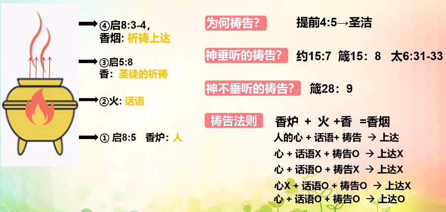

火
路加福音 12:49
“我来要把火丢在地上，倘若已经着起来，不也是我所愿意的吗？
- 特点：热、消灭、消毒、具有两面性
- 种类
- 神的火：真理
- 玛 4:1-2 烧着的火炉那日
- 狂傲的和行恶的：被烧尽（火审判）
- 敬畏神的人：医治之能（火施洗）
- 太 3:11-12
- 撒旦的火：非真理
香炉
启示录 8:3-5 本文经文 香炉 + 香 + 火
→ 地上
另有一位天使，拿着金香炉来，站在祭坛旁边。有许多香赐给他，要和众圣徒的祈祷一同献在宝座前的金坛上。
那香的烟和众圣徒的祈祷从天使的手中一同升到 神面前。
天使拿着香炉，盛满了坛上的火，倒在地上；随有雷轰、大声、闪电、地震。
- 由来
- 出 25:8-9 摩西造帐幕
- 来 9:4 至圣所 → 金香炉
- 来 9:9-10 表样

如何祷告
锅
本文经文 结 24:3-6
- 肉 = 人
- 锅
- 特点：煮东西的器皿
- 真意：结 11:3-7 教会
- 种类
- 火：话语
- 柴：牧者